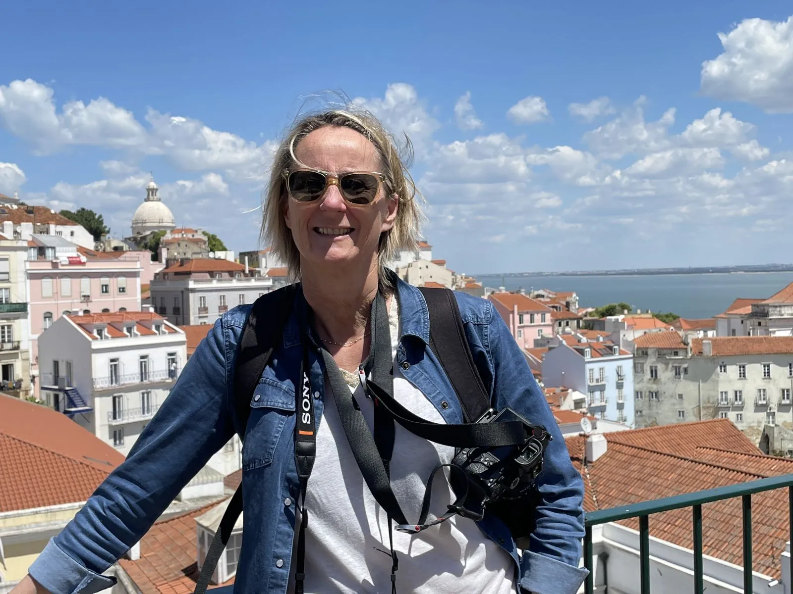
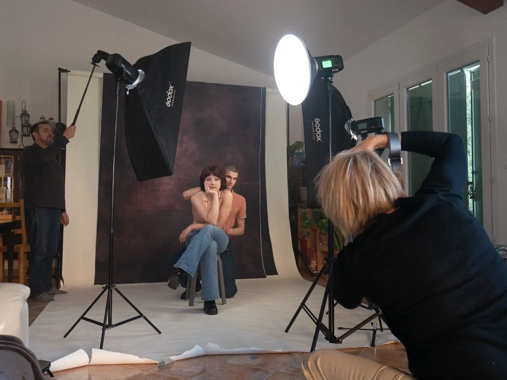
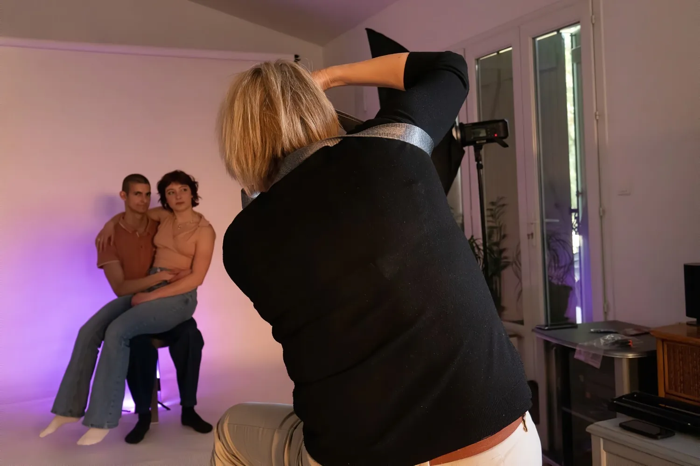

Qui suis-je
Anne Saunier.
Photographe et vidéaste. Mariages, portraits et images d'entreprise, depuis mon studio de Grabels, aux portes de Montpellier.
Se révéler devant l'objectif : un voyage intime à travers le portrait.
Les débuts
La salle de bains transformée en labo.
Mon rapport à l'image commence très tôt. Un appareil argentique. Un agrandisseur installé dans la salle de bains familiale.
Je passais des heures dans le noir, à attendre que l'image apparaisse. Chimie, gestes précis, patience… Cette approche artisanale a façonné mon regard. Ces années argentiques restent le socle de ma manière de créer des images authentiques.


La pause, puis le retour
Retrouver l'image par la lumière.
Puis le numérique est arrivé, et j'ai mis la photo de côté. Cette transition me semblait trop éloignée de ma façon de travailler, où chaque déclenchement comptait.
C'est la photographie immobilière qui m'a ramenée à l'image : un domaine technique, le cadrage, la lumière naturelle, la précision. Très vite, j'ai renoué avec le portrait — lifestyle, nouveau-nés, grossesse — puis avec les besoins des entreprises : portraits d'équipe, dirigeants, reportage métier.
Le tournant
Le confinement, le flash, le studio.
Avec ma famille comme modèles, j'ai travaillé le flash, la lumière artificielle, le contraste, les ambiances.
Une formation au Studio B612 a renforcé cette base : sculpter un visage, créer une atmosphère, diriger un modèle. Aujourd'hui, le studio est essentiel dans ma pratique. J'y réalise les portraits d'entreprise et individuels, les séances famille, grossesse et nouveau-né, et des projets créatifs. C'est un espace où chacun peut se sentir en confiance.


Raconter autrement
Puis la vidéo, naturellement.
Une voix, un geste, une ambiance, une énergie. Avec le portrait, l'envie de raconter différemment est arrivée.
J'accompagne aujourd'hui les entreprises, les créateurs, les indépendants et les familles dans leurs films. Je réalise chacun de A à Z : de la captation à la post-production sur DaVinci Resolve Studio, pour un rendu cohérent et moderne.
Portraits, reportages, films de mariage, séances naissance… tout reste guidé par la lumière, l'émotion et la simplicité.
L'atelier
À Grabels, et partout ailleurs.
Le studio vous accueille sur rendez-vous, aux portes de Montpellier. Il est chauffé et aménagé, y compris pour les tout-petits.
13 allée des Platanes, 34790 Grabels06 48 55 99 22 · photo34000@gmail.com
Je me déplace aussi chez vous ou en extérieur : Montpellier, Palavas, Clapiers, Lattes, Castelnau-le-Lez, Saint-Jean-de-Védas… et sans limite de distance pour les mariages, en France comme à l'étranger.

Quand je ne photographie pas les autres
Un regard qui s'exerce.


Les paysages autour de Montpellier — la mer, les vignes, la garrigue, la Camargue — sont une source d'inspiration et de sérénité. Dans la rue, je cherche le mouvement, l'inattendu, l'instant de vérité : c'est ce qui développe mon instinct et nourrit mes séances portrait.
Faisons connaissance
Chaque projet commence par une rencontre.
Une question, une envie, une date : parlons-en, sans engagement.